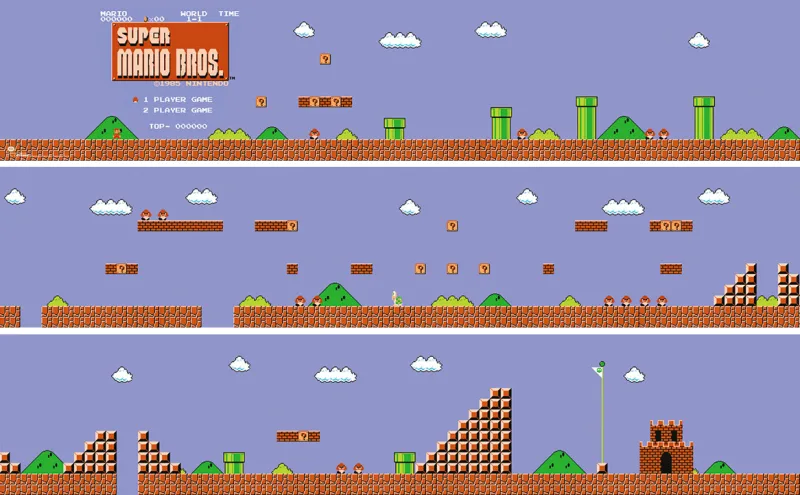
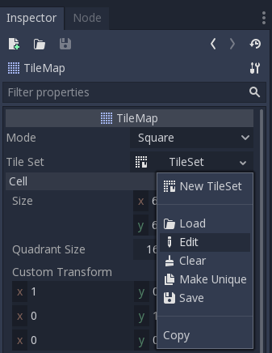
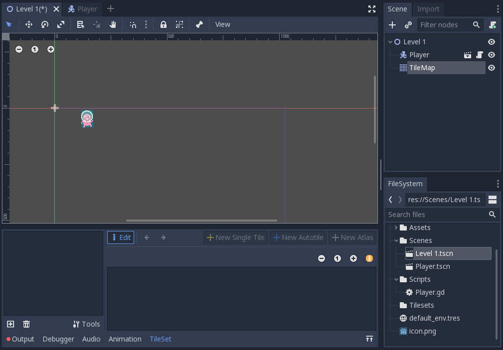
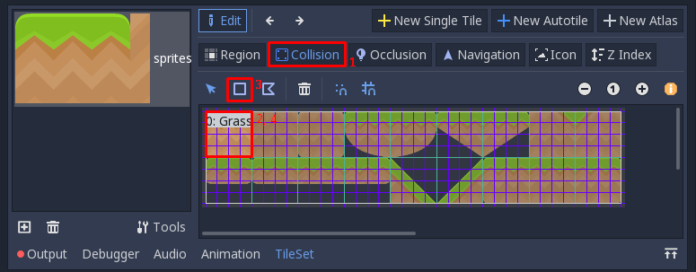
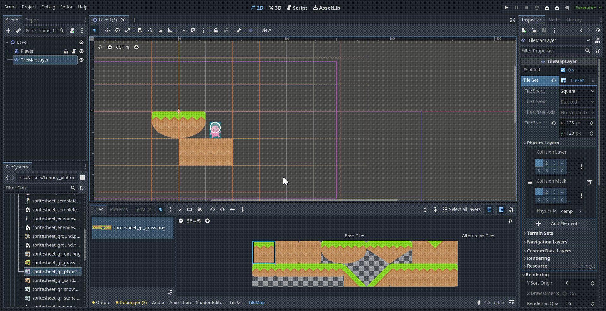
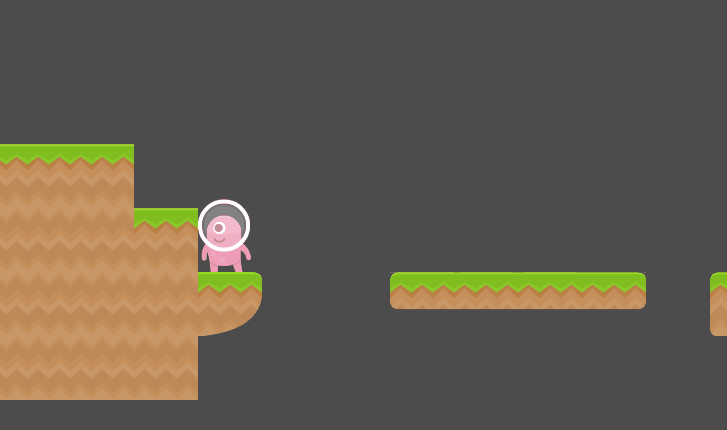
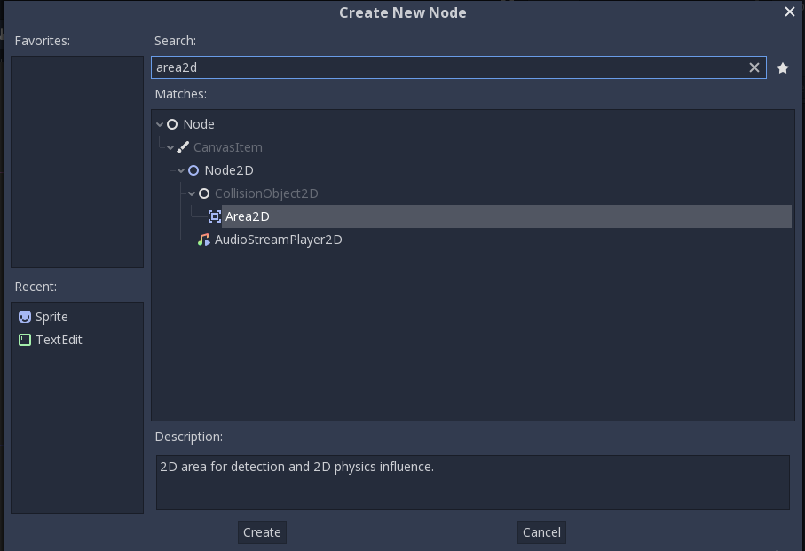
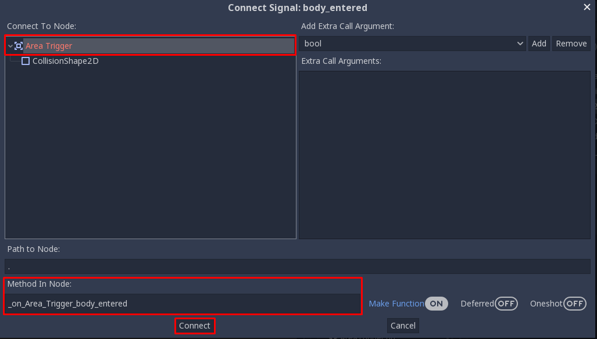
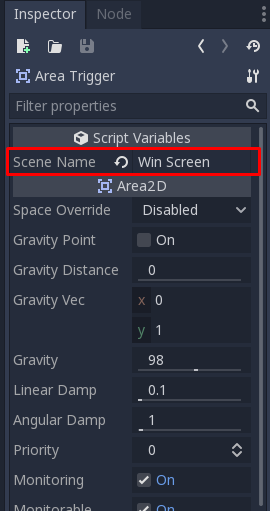
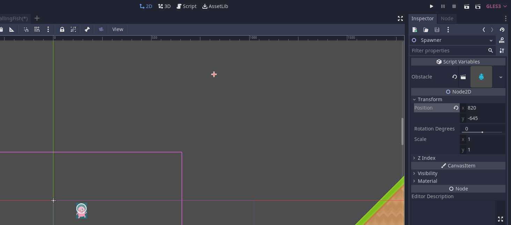

Tutorial 4 - Basic 2D Level Design
Selamat datang pada tutorial keempat kuliah Game Development. Pada tutorial kali ini, kamu akan mempelajari cara membuat level sederhana pada bidang 2D menggunakan engine Godot. Selain itu, kamu juga akan mempelajari mekanisme event handling menggunakan sistem signal di Godot dan implementasi objek spawner untuk membuat rintangan di dalam permainan. Di akhir tutorial ini, diharapkan kamu paham dengan penggunaan tilemap dan sistem signal di Godot.
Daftar Isi
- Tutorial 4 - Basic 2D Level Design
- Daftar Isi
- Pengantar
- Latihan: Membuat Tile Map
- Latihan: Membuat Kamera
- Latihan: Membuat Kondisi Akhir Permainan Menggunakan Signal
- Latihan: Membuat Rintangan Membuat Spawner
- Latihan Mandiri: Membuat Level Baru Dengan Tile Map & Obstacle Berbeda
- Skema Penilaian
- Pengumpulan
- Referensi
Pengantar
What Is a Level?
Pada tutorial sebelumnya kita sudah membuat sebuah objek player sederhana yang dapat bergerak ke kanan dan kiri dan juga dapat melompat. Namun tempat ia bergerak masih sangat terbatas dan belum memiliki tujuan (objective) di dalam permainan. Oleh karena itu, kita memerlukan sebuah level supaya pemain memiliki tujuan di dalam permainan ketika mengendalikan objek player.
Sebuah level pada dasarnya adalah tempat dimana player dapat melakukan action dan mungkin memiliki sebuah goal.
Level Example
Contoh sebuah level yang terlihat sederhana:

Super Mario Bros World 1-1, Nintendo 1985
Kita akan membuat sebuah level 2D sederhana menggunakan salah satu fitur engine Godot yaitu tile mapping menggunakan TileMap.
Pada tutorial ini akan didemonstrasikan:
- Membuat
TileSetuntukTileMap. - Membuat level menggunakan
TileMap. - Membuat kamera mengikuti objek player.
- Membuat pemicu kondisi (trigger) menang dan kalah.
Creating A Simple Level using TileMap
Preparation
Mari memulai tutorial ini dengan membuat salinan repositori Git template proyek Tutorial 4.
Buka laman GitHub repositori template proyek Tutorial 4
dan klik "Use this template" untuk membuat salinan repositori Git tersebut ke dalam akun GitHub pribadi.
Kemudian atur visibility repositori Git proyek Tutorial 4 kamu menjadi Public
dan salin (git clone) repositori Git Tutorial 4 milikmu ke lingkungan pengembangan lokal.
Jika sudah membuat salinan repositori Git proyek Tutorial 4 secara lokal,
buka proyek Tutorial 4 menggunakan Godot.
Kemudian buka scene Level1.tscn dan coba jalankan playtest pada scene tersebut.
Kamu akan melihat ada suatu makhluk yang akan langsung jatuh ketika scene dimainkan.

Klik kanan pada node Level1 dan pilih "Add Child Node", kemudian pilih TileMap.
Setelah TileMap berhasil ditambahkan akan terlihat grid samar-samar berwarna oranye pada scene dan muncul 1 tab baru disebelah scene.
(Jika tidak terjadi apa-apa, coba pilih node TileMap)

Pada tab Inspector, atur Size menjadi 128 untuk X dan Y.

Latihan: Membuat Tile Map
Jika diibaratkan dengan melukis, kita baru saja mempersiapkan kanvas dan kuas. Kita masih kekurangan cat untuk melukis.
Untuk mempersiapkan cat, pada tab Inspector klik dropdown menu TileSet dan pilih New TileSet.

Lalu klik lagi dropdown tadi dan pilih Edit.

Akan muncul window baru dengan nama TileSet.

Lalu klik ikon plus di kiri bawah window tersebut dan pilih assets/kenney_platformerpack/Spritesheets/*.
Dalam contoh ini digunakan spritesheet_gr_dirt.png, namun kamu bebas menggunakan yang tersedia atau menambah sendiri.
Jika sudah maka akan tampil seperti berikut.

Terdapat beberapa cara untuk membuat Tile Set:
- Single Tile untuk tile satuan jika ingin memasukan setiap tile satu-persatu.
- Autotile untuk tile yang bisa di automasikan pemilihannya berdasarkan tile sekelilingnya, contohnya pada game dengan tipe top-down perspective.
- Atlas untuk tile yang bertipe sejenis dan akan lebih mudah diorganisir daripada menggunakan single tile berulang kali.
Pada tutorial ini kita akan menggunakan Atlas.
Klik New Atlas, lalu drag area yang akan dijadikan Tile Set.
Tips: supaya hidup kamu mudah silakan menggunakan fitur
snap to grid(Klik logo magnet).

Kemudian pada tab Inspector silakan isi nama sesuka hati dan atur Subtile Size ke 128 untuk X dan Y.
Jika sudah jangan lupa untuk men-save Tile Set (penamaan bebas).

Supaya player dapat collide dengan tile, kita perlu menambahkan collider pada tile tersebut.
Untuk melakukannya klik Collision, klik ke subtile yang dituju, klik ikon kotak (no 3)), dan akhirnya klik lagi subtile tersebut.

Untuk mengatur bentuk collider silakan geser vertex (lingkaran merah) sesuai keinginan. Ulangi langkah 2 sampai 4 untuk setiap subtile. Berikut contoh hasil pengaturan bentuk-bentuk collider pada setiap subtile:

Jika sudah berhasil, klik node TileMap pada tab Scene dan Tile Set tadi akan tampil dan siap untuk digunakan. Selamat berkreasi.

Note : Node TileMap di scale menjadi 0.5 pada X dan Y agar ukuran tile tidak terlalu besar dibanding player. (Tab Inspector > Transform > Scale)
Latihan: Membuat Kamera
Sekarang kita sudah memiliki sebuah level, namun jika scene di-play kamera akan diam di tempat awal dan membatasi apa yang bisa dilihat. Oleh karena itu kita akan membuat kamera yang akan mengikuti kemanapun mahluk pink itu pergi.
Buka scene scenes/Player.tscn, tambah node Camera2D sebagai child node dari Player.
Kemudian pada tab Inspector centang Current.

Sekarang kamera akan selalu mengikuti mahluk itu kemanapun ia pergi.

Latihan: Membuat Kondisi Akhir Permainan Menggunakan Signal
Sebuah level tidak lengkap tanpa tujuan akhir, atau jika si mahluk terpleset dan jatuh ke jurang, dia hanya bisa berkontemplasi sampai akhir jaman. Supaya mahluk tersebut tidak bernasib sama seperti Kars, mari kita buat zona untuk lose dan win condition.
Pertama buat scene baru (nama bebas) dengan Area2D sebagai root node.

Lalu tambahkan node CollisionShape2D sebagai child node Area2D tadi.
Jangan lupa untuk membuat collision shape pada node CollisionShape2D (Kamu seharusnya sudah pernah melakukannya pada tutorial sebelumnya).

Kemudian buat dan tempelkan sebuah script pada node Area2D (penamaan bebas, misal: LoseCondition, LoseArea).
Hapus semua baris pada script baru tersebut kecuali statement extends.
Kita akan menggunakan Signals untuk fitur ini.
What is Signals?
Sesuai dengan namanya, Signals berfungsi untuk memberikan "tanda" jika suatu kondisi khusus terpenuhi. Yang dimaksud dengan memberikan tanda disini adalah mengeksekusi suatu fungsi yang kita definisikan sendiri. Jenis Signals yang ada pada suatu node akan berbeda-beda tergantung tipe node tersebut.
Using Signals
Pertama pilih node Area2D lalu buka tab Node.
Lalu pada subtab Signals pilih body_entered(PhysicsBody2D body) dan klik tombol Connect di kanan bawah tab tersebut.

Pastikan Area2D terpilih pada bagian Connect To Node, isi Method In Node dengan nama fungsi yang kamu inginkan atau biarkan default.
Jika sudah tekan tombol Connect

Maka script pada Area2D akan ditambah fungsi tersebut.

Silakan tambah cuplikan dibawah pada script tersebut. (Jangan lupa ganti nama fungsi sesuai penamaan masing-masing)
1 2 3 4 5 6 7 | |
Secara singkat fungsi tersebut akan dipicu setiap kali ada objek dengan tipe PhysicsBody2D yang masuk area collision.
Jika objek tersebut adalah Player, maka ubah root node (current scene) dengan scene bernama sceneName yang tersimpan di dalam folder scenes.
Adding Signals to the Level
Simpan scene dan script tersebut (Mulai sekarang disebut AreaTrigger) dan buka kembali scene Level1.tscn.
Supaya pemain dapat jelas melihat goal, tambah node dengan tipe Sprite sebagai child dari node Level1 dan ubah Texture menjadi ~~rektorat~~ roket atau bebas.
Kemudian tambahkan scene AreaTrigger sebagai child dari sprite tersebut, silakan atur scaling sesuai keperluan.
Jangan lupa ubah variabel sceneName menjadi nama scene yang akan ditampilkan ketika pemain menang, misalnya WinScreen.

Lakukan hal yang sama untuk area dibawah level namun dengan Scene Name diisi dengan "Level 1".
Supaya ketika player jatuh ke jurang, scene akan di-reload.
Berikut contoh Level 1 yang sudah lengkap.

Latihan: Membuat Rintangan Menggunakan Spawner
Saat ini level 1 hanya memiliki satu buah rintangan berupa jurang. Untuk menambah variasi rintangan serta mempraktikkan pemrograman lebih lanjut, maka bagian tutorial ini akan memperkenalkan kamu dengan implementasi object spawner. Objek ini biasa digunakan untuk membuat objek secara dinamis ketika permainan berjalan. Sebagai contoh, di permainan 2D genre top-down shooter, spawner biasa dipakai untuk membuat objek-objek peluru (bullet) yang berterbangan ke arah pemain.
Mari pikirkan rintangan yang akan ditambahkan ke dalam permainan. Misalnya kita membayangkan dunia permainan mengalami fenomena cuaca absurd dimana kadang-kadang ada ikan yang jatuh dari langit. Apabila pemain terkena ikan yang jatuh dari langit, maka pemain langsung kalah dari permainan.
Dari uraian di atas, kamu akan membuat:
- Objek konkrit yang merepresentasikan ikan.
- Script untuk objek ikan tersebut yang akan memicu kondisi kalah pemain ketika terkena ikan.
Buatlah scene yang merepresentasikan objek ikan.
Buat scene baru dengan root node bertipe RigidBody2D.
Kemudian di dalam scene tersebut, tampahkan child node Sprite dan CollisionShape2D.
Atur texture pada Sprite agar menggunakan gambar ikan yang tersedia di kumpulan aset (misal: assets/kenney_platformerpack/PNG/Enemies/fishBlue.png).
Kemudian atur bentuk collider pada CollisionShape2D agar mencakup (cover) bentuk ikan.
Hasil akhirnya akan serupa seperti screenshot berikut:

Sekarang buatlah script baru untuk diasosiasikan ke scene objek ikan.
Isi dari script tersebut akan serupa dengan script untuk kondisi kalah yang sudah pernah dibuat sebelumnya.
Perbedaannya akan ada pada tipe objek yang bertabrakan.
Pada implementasi kondisi kalah ketika terjatuh ke jurang,
kondisi kalah akan dipicu ketika objek Player masuk ke dalam Area2D abstrak di dalam jurang.
Sedangkan untuk kondisi kalah ketika terkena ikan,
kondisi kalah akan dipicu ketika objek Player bertabrakan dengan objek ikan.
Silakan coba pikirkan dan implementasikan sendiri script-nya,
supaya lebih terbiasa dengan pemrograman di Godot.
Jika butuh referensi, berikut ini adalah salah satu contoh script yang mengimplementasikan kondisi kalah ketika Player bertabrakan dengan objek ikan:
1 2 3 4 5 6 7 8 9 | |
Note: Jangan lupa untuk menempelkan (attach) script yang baru kamu buat ke scene objek ikan.
Membuat Spawner
Objek spawner akan berupa objek abstrak di dalam dunia permainan, serupa dengan objek yang merepresentasikan jurang di Level 1.
Untuk membuat spawner, tambahkan child node bertipe Node2D pada scene Level 1.
Beri nama child node baru tersebut sebagai Spawner.
Kemudian, atur posisi objek spawner di dalam dunia Level 1 agar berada di langit-langit Level 1.
Misalnya di titik koordinat (820, -645), seperti yang digambarkan pada screenshot berikut:

Setelah menempatkan objek spawner di dalam Level 1,
buatlah script baru bernama Spawner.gd dan tempelkan ke objek spawner.
Isi dari script tersebut adalah sebagai berikut:
1 2 3 4 5 6 7 8 9 10 11 12 13 14 15 16 17 18 19 20 | |
Penjelasan dari isi script:
export (PackedScene) var obstacleakan membuat variabelobstacleterdaftar di panel Inspector. Kamu nanti akan dapat mengisi variabel tersebut dengan scene objek ikan.- Fungsi
_ready()memanggil fungsirepeat(). Fungsirepeat()akan dipanggil berulang kali selama permainan berjalan dengan interval antar pemanggilanrepeat()selama 1 detik. - Fungsi
repeat()memanggil fungsispawn(). Fungsispawn()bertugas untuk melakukan instansiasi objek secara dinamis. Dalam hal ini, scene yang dikandung oleh variabelobstacleakan diinstansiasi di sebuah posisi acak pada sumbu X.
Apabila sudah mengisi script dan menempelkannya ke objek spawner, silakan simpan perubahan dan coba playtest permainannya. Seharusnya jika diimplementasikan dengan benar, objek ikan akan jatuh secara acak dan memicu kondisi kalah jika mengenai pemain. Apabila masih belum berhasil, silakan konsultasi dengan pengajar yang tersedia di ruang lab.
Latihan Mandiri: Membuat Level Baru Dengan Tile Map & Obstacle Berbeda
Sebagai bagian dari latihan mandiri, kamu diminta untuk praktik membuat level baru yang berbeda dari level pertama. Kebutuhan minimum yang harus diimplementasikan pada level baru:
- Level menggunakan tile map yang berbeda dari level pertama.
- Terdapat spawner rintangan di level baru yang membuat objek berbeda dari ikan.
- Memiliki rintangan berupa jurang dan objek yang berjatuhan secara periodik.
Silakan berkreasi lebih lanjut untuk membuat level baru kamu makin menarik!
Jangan lupa untuk menjelaskan proses pengerjaan level baru ini di dalam sebuah dokumen teks README.md.
Cantumkan juga referensi-referensi yang digunakan sebagai acuan ketika menjelaskan proses implementasi.
Skema Penilaian
Pada tutorial ini, ada empat kriteria nilai yang bisa diperoleh:
- 4 (A) apabila kamu mengerjakan tutorial dan latihan melebihi dari ekspektasi tim pengajar. Nilai ini dapat dicapai apabila mengerjakan seluruh Latihan dan Latihan Mandiri, ditambah dengan memoles (polishing) lebih lanjut permainannya.
- 3 (B) apabila kamu hanya mengerjakan tutorial dan latihan sesuai dengan instruksi. Nilai ini dapat dicapai apabila mengerjakan seluruh Latihan dan Latihan Mandiri.
- 2 (C) apabila kamu hanya mengerjakan tutorial hingga tuntas. Nilai ini dapat dicapai apabila mengerjakan seluruh Latihan namun tidak mengerjakan Latihan Mandiri.
- 1 (D) apabila kamu hanya sekedar memulai tutorial dan belum tuntas.
- 0 (E) apabila kamu tidak mengerjakan apapun atau tidak mengumpulkan.
Pengumpulan
Kumpulkan semua berkas pengerjaan tutorial dan latihan ke dalam Git dan push ke repositori Git pengerjaan tutorial 4. Apabila kamu mengerjakan latihan mandiri, pastikan scene dan node sudah tercatat masuk ke dalam repositori Git. Kemudian, kumpulkan tautan ke repositori Git hasil pengerjaan tutorial 4 kamu di slot pengumpulan yang tersedia di SCELE.
Tenggat waktu pengumpulan adalah 6 Maret 2024 pukul 21:00.
Referensi
- Tilemaps
- Signals
- Kenney Assets
- Materi tutorial pengenalan Godot Engine, kuliah Game Development semester gasal 2020/2021 Fakultas Ilmu Komputer Universitas Indonesia.
Created: 2024-02-29 01:49:08